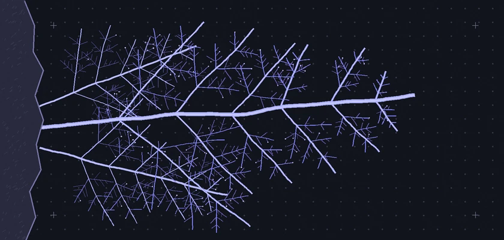

我是 Gunpowder，同济大学机器人专业本科生。这里收藏我的研究、代码，以及屏幕之外的创作。
先少换乘，再少坐几站。用 C++ 和 Qt 把路线规划做成可编辑的地铁图。

把锂沉积的形貌图像与充放电曲线放在一起，研究枝晶如何生长。论文已投至 AI and Energy。
作为开发小组成员，参与用普通 RGB 摄像头引导机械臂识别、定位和采摘果实的原型项目。
给 Android 写的心情记录本。打开就能记一笔，草稿保存在本机，也可以导出为 Markdown。